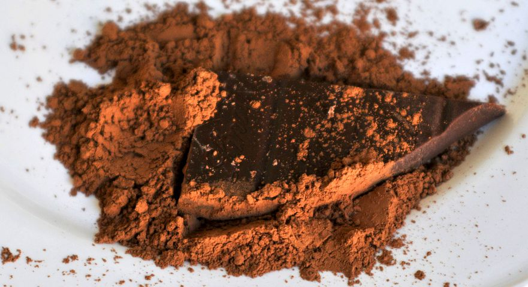
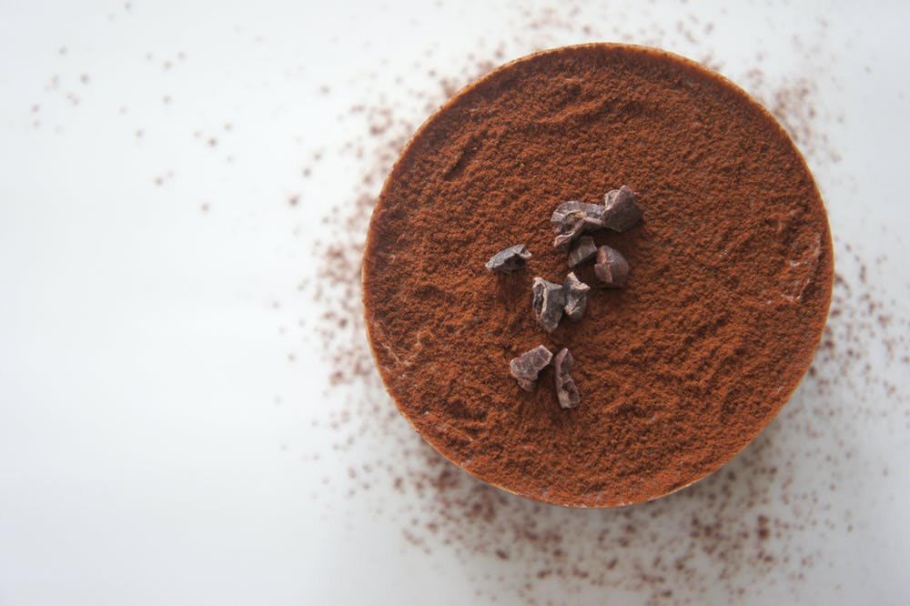
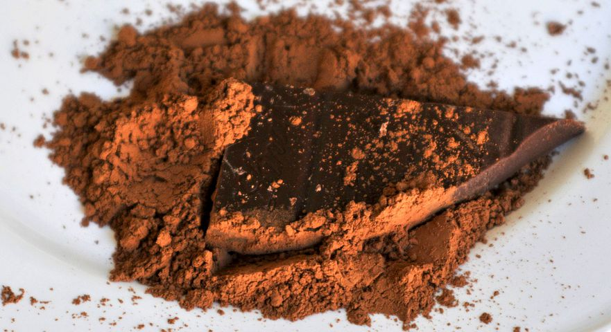
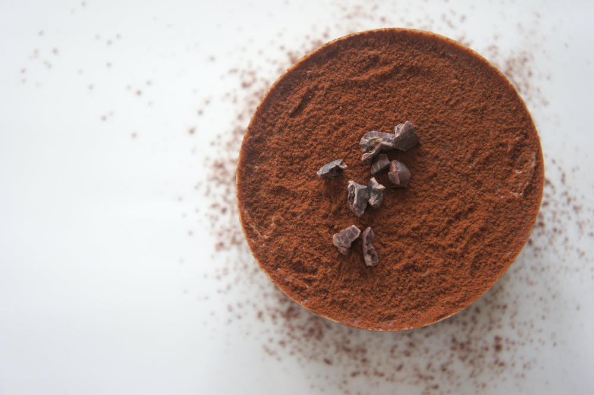
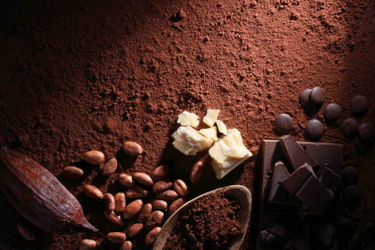

Interesting Facts About Cocoa
Cocoa Fun Facts from Rodelle
Find the article:
Rodelle
- Cacao trees are found only in hot, rainy, tropical climates, 20 degrees north and south of equator, just like vanilla.
- The first time cocoa, or chocolate was used as a romantic gesture was in the Mayan culture.
- The Aztecs used cocoa to create a form of "hot chocolate" or as they called it "xocolatl" which means bitter water.
- Supposedly the Aztec Emperor, Montezuma - was quoted saying of Xocolatl: "The divine drink, which builds up resistance and fights fatigue. A cup of this precious drink permits a man to walk for a whole day without food."
- To the Aztec's, Xocolatl was much more valuable than gold or silver. When Montezuma was defeated by Cortez in 1519, the conquistadors searched his palace and found huge quantities of cocoa beans instead of gold, silver, or precious metals.
- Cocoa/chocolate is thought be an aphrodisiac.
- The Swiss consume more chocolate per capita than any other nation on earth: 22 pounds each compared to 11 pounds per person in the United States.
- Cocoa pods are the fruit of the cacao tree.
- It takes a cocoa tree five years to produce its first cocoa beans (pods).
- The peak growing period for a cocoa tree is a duration of 10 years.
- Cocoa beans are called "cocoa" beans and not "cacao" beans because of a spelling mistake made by English importers in the 18th century when chocolate was becoming popular.
- Cacao trees range from 13-26 feet tall. Sometimes reaching 32 feet.
- Cocoa flowers can blossom on cacao trees all year around, however the flowers will die within 24 hours if not pollinated.
Cocoa Fun Facts from Mobile Cuisine
Find the article:
Mobile Cuisine

- It takes 5 years for a cocoa tree to produce its first seed pods.
- It takes about 400 beans to make a pound of chocolate.
- December 13th is National Cocoa Day.
- Chocolate has properties that combat Heart disease; thanks to flavanoids from the cocoa plant.
- Cocoa was exported to Europe in 1585 but the first chocolate bar was not made until 1848.
- The first chocolate house for the United States was established in Dorchester, Massachusetts.
- Throughout the world the annual cocoa production is 3 million tons.
- Watching your caffeine intake? An ounce of semi-sweet dark chocolate has only 20 milligrams on average, about the same amount as three ounces of brewed regular tea.